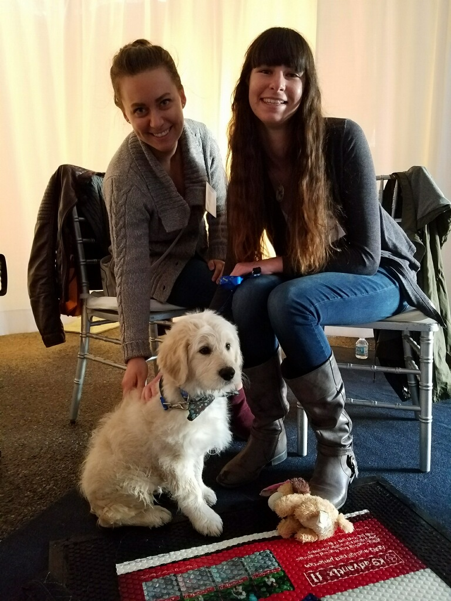
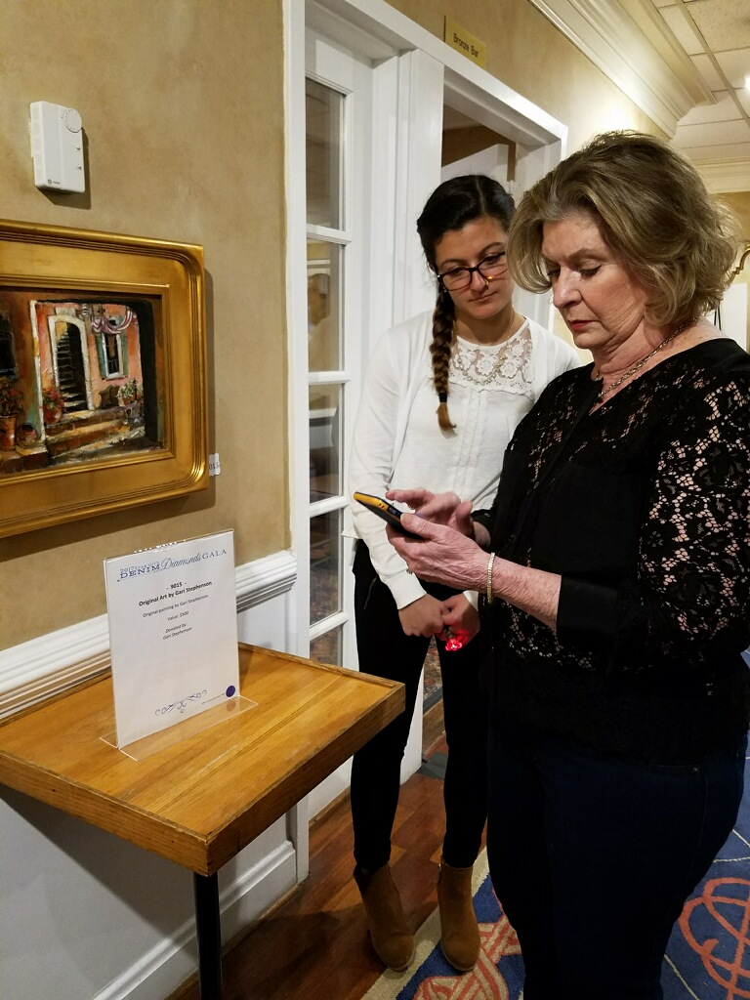
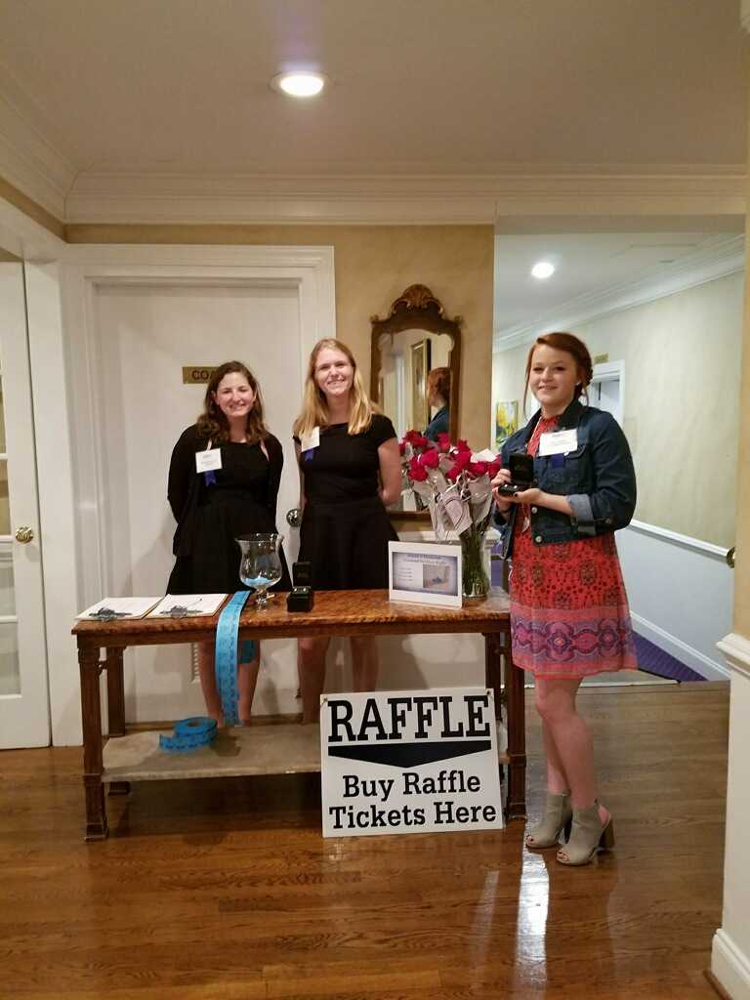

JDRF Denim and Diamonds Gala
  The 2017 JDRF Star City Denim and Diamonds Gala raised $330,000 for Type One Diabetes research. It's an honor to contribute our time and talents to such a wonderful organization; the Roanoke chapter of JDRF works tirelessly to improve the lives of those living with T1D. Together we hope to turn type one into type none!
Service Events
We've been busy this semester! Here are some of the service events our sisters have been doing!
- Habitat for Humanity
- Pulaski Animal Shelter
- Food Pantry
- Shack-A-Thon
- Boxes for Troops
- Linus Blankets
- Knitting
- Relay for Life
- Cards for Warm Hearth
- Michael's yarn drive
- Helping with K2C (kindergarten to college program)
- Big Event
- Micah's Backpack
- Writing postcards to prospective new female engineering students
- Cleaning the Huckleberry Trail
External Philanthropies
This semester, we participated in three philanthropies: Phi Sigma Kappa's March Madness Bracket Challenge that supports the New River Valley chapter of the Special Olympics, Phi Delta Theta's Phi Dye that supports the ALS Association, and Alpha Epsilon Pi's Animal House that supports the Gift of Life Foundation. All of these philanthropies were so much fun to participate in, and allowed for the sisters to give back to the community by raising awareness and donating to some very worthy organizations.
March Madness is always a huge craze during college basketball season, and we were lucky enough to have a friendly bracket competition against each other and other Greek organizations all while donating to the NRV chapter of Special Olympics. Phi Dye was especially successful because during the Color Games, we won first place in 3/4 events and won 1st place overall. The Smash and Splash (for Phi Dye as well) provided an opportunity for sisters and students around campus to relieve some stress from school, all for a good cause of course. AEPi hosted an open petting zoo for students on campus. The animals featured were alpacas, chickens, bunnies, goats, and a miniature horse.
Overall, our sorority is very passionate about giving back to the community and love to participate in various philanthropies when given the chance. Hopefully, we get more awesome opportunities next semester to keep participating in these wonderful philanthropies!